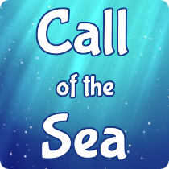
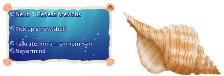

Call of the Sea
Call of the Sea is a very straightforward ghost, though out of the ordinary. This is not a typical desktop companion; it will sit on your desktop, and now and then you'll hear snips of conversation from the other side of the shell. What those snips of conversation mean? That's up to you to figure out.
Originally made for Ghost Masquerade 5, as an experience lasting approximately 3 hours. Note that there is now a talk rate option. I recommend leaving it at 3 minutes, but you can adjust it if you like to make the experience take more or less time.
